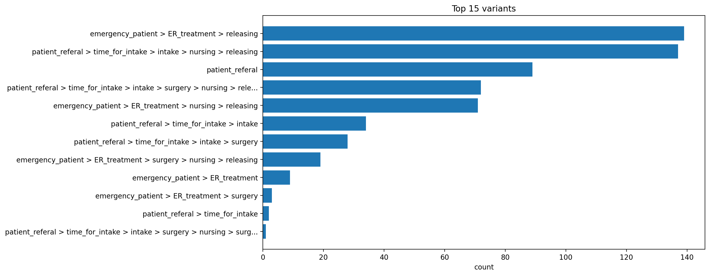
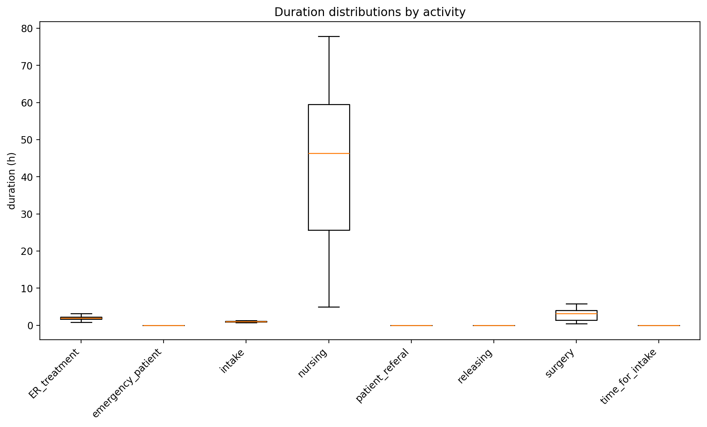
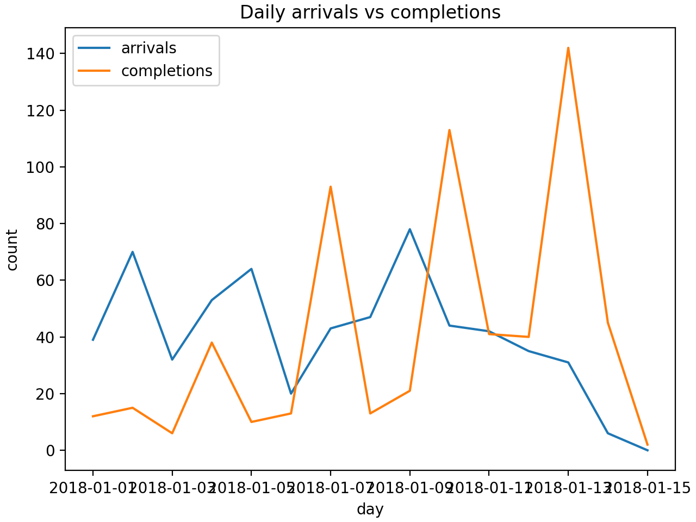
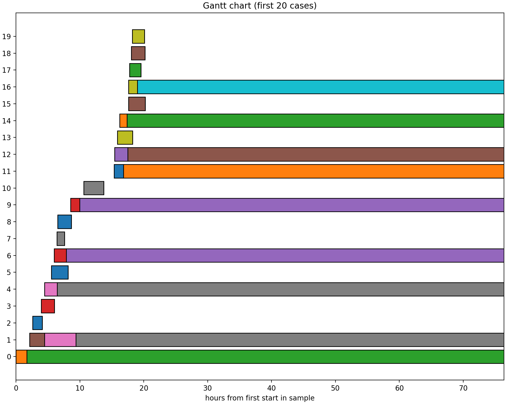

<h1>Process Mining Report</h1>
<h2>Figures</h2>
<h3>variants_top.png</h3>
<h3>activity_avg_duration.png</h3>
<h3>activity_duration_boxplots.png</h3>
<h3>cycle_time_hist.png</h3>
<h3>throughput_daily.png</h3>
<h3>dfg_heatmap.png</h3>
<h3>gantt_sample.png</h3>
<h2>Data</h2><ul>
<li><a href='variants.csv'>variants.csv</a></li>
<li><a href='dfg.csv'>dfg.csv</a></li>
<li><a href='dfg_adjacency_matrix.csv'>dfg_adjacency_matrix.csv</a></li>
<li><a href='activity_durations.csv'>activity_durations.csv</a></li>
<li><a href='edge_waits.csv'>edge_waits.csv</a></li>
<li><a href='case_cycle_times.csv'>case_cycle_times.csv</a></li>
<li><a href='throughput_daily.csv'>throughput_daily.csv</a></li>
<li><a href='summary.txt'>summary.txt</a></li>
</ul>